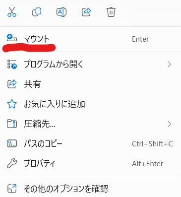

この記事では、Windows 10/11環境下において、フォルダの内容をISOファイルとしてアーカイブする際に、信頼性を懸念される第三者製ツールを用いることなく、標準搭載されたPowerShellの機能のみで実現する方法について解説します。
従来、New-ISOFileコマンドレットがISOファイル作成の簡便な手段として存在しましたが、現在、標準的な提供はされていません。しかしながら、コミュニティによって開発された代替スクリプトを活用することで、PowerShell単体でフォルダからISOファイルを生成することが可能です。
本稿では、その代替スクリプトを利用し、PowerShellのみでフォルダからISOファイルを生成する手順を解説します。
本稿で解説する方法では、以下の2つのPowerShell関数を使用します。
New-ISOFileFromFolder: 指定されたフォルダの内容に基づいてISOファイルを作成する主要な関数。Write-IStreamToFile: ストリームデータをファイルに書き出すための補助関数。これらの関数は、PowerShell Galleryにて公開されています。以下の手順に従い、これらの関数をお客様の環境で利用可能な状態にしてください。
まずPowerShellを起動します。スタートメニューから「powershell」を検索し実行してください。この際、管理者権限である必要はありません。
次に、以下の2コードをそれぞれPowerShellコンソールにコピー＆ペーストし、実行（改行キーを押下）します。これにより、New-ISOFileFromFolder関数とWrite-IStreamToFile関数が現在のPowerShellセッションで使用可能になります。
まずWrite-IStreamToFile関数です。
function Write-IStreamToFile([__ComObject] $istream, [string] $fileName)
{
# NOTE: We cannot use [System.Runtime.InteropServices.ComTypes.IStream],
# since PowerShell apparently cannot convert an IStream COM object to this
# Powershell type. (See http://stackoverflow.com/a/9037299/223837 for
# details.)
# It turns out that .NET/CLR _can_ do this conversion.
#
# That is the reason why method FileUtil.WriteIStreamToFile(), below,
# takes an object, and casts it to an IStream, instead of directly
# taking an IStream inputStream argument.
$cp = New-Object CodeDom.Compiler.CompilerParameters
$cp.CompilerOptions = "/unsafe"
$cp.WarningLevel = 4
$cp.TreatWarningsAsErrors = $true
Add-Type -CompilerParameters $cp -TypeDefinition @"
using System;
using System.IO;
using System.Runtime.InteropServices.ComTypes;
namespace My
{
public static class FileUtil {
public static void WriteIStreamToFile(object i, string fileName) {
IStream inputStream = i as IStream;
FileStream outputFileStream = File.OpenWrite(fileName);
int bytesRead = 0;
int offset = 0;
byte[] data;
do {
data = Read(inputStream, 2048, out bytesRead);
outputFileStream.Write(data, 0, bytesRead);
offset += bytesRead;
} while (bytesRead == 2048);
outputFileStream.Flush();
outputFileStream.Close();
}
unsafe static private byte[] Read(IStream stream, int toRead, out int read) {
byte[] buffer = new byte[toRead];
int bytesRead = 0;
int* ptr = &bytesRead;
stream.Read(buffer, toRead, (IntPtr)ptr);
read = bytesRead;
return buffer;
}
}
}
"@
[My.FileUtil]::WriteIStreamToFile($istream, $fileName)
}次にNew-ISOFileFromFolder関数です。
Function New-ISOFileFromFolder{
<#
.SYNOPSIS
Creates an ISO file from a filepath
#>
param(
[Parameter(Mandatory=$true)]
[String]$FilePath,
[Parameter(Mandatory=$true)]
[String]$Name,
[Parameter(Mandatory=$true)]
[String]$ResultFullFileName
)
write-host "Creating ISO $Name" -ForegroundColor Green
$fsi = New-Object -ComObject IMAPI2FS.MsftFileSystemImage
$dftd = New-Object -ComObject IMAPI2.MsftDiscFormat2Data
$Recorder = New-Object -ComObject IMAPI2.MsftDiscRecorder2
$fsi.FileSystemsToCreate = 7
$fsi.VolumeName = $Name
$fsi.FreeMediaBlocks = 1000000 #default 332800
$fsi.Root.AddTreeWithNamedStreams($FilePath,$false)
$resultimage = $fsi.CreateResultImage()
$resultStream = $resultimage.ImageStream
Write-IStreamToFile $resultStream $ResultFullFileName
}実行可能になったかどうかは、コマンドで確認できます。
Get-Command New-ISOFileFromFolder
Get-Command Write-IStreamToFile上記のコマンドを実行した際、それぞれの関数が実行可能になっていれば「Function」として出力されます。
> Get-Command New-ISOFileFromFolder
CommandType Name Version Source
----------- ---- ------- ------
Function New-ISOFileFromFolder
> Get-Command Write-IStreamToFile
CommandType Name Version Source
----------- ---- ------- ------
Function Write-IStreamToFileスクリプト定義後、以下のコマンドを実行してISOファイルを作成します。
New-ISOFileFromFolder "<ターゲットフォルダのパス>" "<ISOのボリュームラベル>" "<作成するISOファイルのフルパス>" <ターゲットフォルダのパス>: ISOファイルに含めるファイルやフォルダが格納されているパスを指定します。（例: C:\Users\Public\Documents\Backup)<ISOのボリュームラベル>: 作成するISOファイルに付与する名前を指定します。（例: Backup_20231027)<作成するISOファイルのフルパス>: 作成するISOファイルの保存場所とファイル名を指定します。ボリュームラベルと一致させる必要は必ずしもありませんが、.isoの拡張子は必須です（例: D:\MyBackup.iso)実行例:
C:\MyDataフォルダの内容を、D:\Archive.isoというファイル名で、ボリュームラベルをDataBackupとして作成する場合のコマンドは以下の通りです。
New-ISOFileFromFolder "C:\MyData" "DataBackup" "D:\Archive.iso"コマンド実行後、指定された場所にISOファイルが生成されます。
作成したISOファイルを右クリックすると、メニュー中に「マウント」という選択肢があります。

これをクリックすることで、ISOファイルをマウントできます。マウントしたあとは、物理メディアを読み込ませた場合と同じ感覚で利用できます。
PowerShellを活用することで、第三者製のソフトウェアに依存することなく簡単にフォルダからISOファイルを生成できます。セキュリティを重視する場合や、基本的なISOファイル作成だけで良い場合は有効な手段となり得ます。ただし、より高度な機能が要求される場合は、専用のオーサリングソフトウェアのご検討を推奨します。